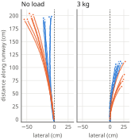

BLEGS quadruped · Paper section 2.3 · Physical Locomotion Test
การทดสอบการเคลื่อนที่ของหุ่นยนต์
ระบบชดเชยด้วย ML ทำให้หุ่นเดินตรงขึ้นจริงไหม และหุ่นเดินบนพื้นแบบไหนได้บ้าง
ขา 4 · มอเตอร์ 8 ตัว · เฟือง 8:1
มวล 5.6 kg
แรงบิด/มวล 1.81 N·m/kg
ลูปควบคุม 50 Hz · บัส 12 V
แบบจำลองชดเชย POLY4
2.3.1
การจัดเตรียมการทดลองSetup
กล้อง 4K
สูง 1.5 m
ทางวิ่ง 2.4 m
แท็กพื้น 14 ตัว · ระยะ 80 × 40 cm
แท็กบนหลัง 14 × 37 cm
แท็ก ArUco 6×6 · มองจากด้านบน
ท่าเดินทแยงมุม (2.3.2)
ก้าว 50 mm · 0.44 s/รอบ
ยกเท้า · แตะพื้น
25 mm · 70% ของรอบ
สอบเทียบกล้อง
ค่าคลาดเคลื่อน 0.16 px
แก้ความผิดเพี้ยนเลนส์
ทุกเฟรม
ตำแหน่งแท็กบนหลัง (รังสี × ระนาบ)
ที่ความสูง 26–27.5 cm
ตรวจกลับด้วยขนาดกรอบแท็ก
ตรงตลับเมตร ±0.5 mm
2.3.2
การชดเชยด้วย ML บนการเดินจริงเดินตรงแบบวงเปิด · โหลดละ 5 คู่ (เปิด/ปิด ML สลับกัน) · 3 พ.ย. 2026

● จุดหยุด
3.0×
เบี่ยงน้อยลงเมื่อเปิด ML
1.9×
เบี่ยงน้อยลงเมื่อเปิด ML
10/10
คู่ที่เปิด ML
อัตราการเบี่ยงต่อระยะทาง |δ| (cm/m) · เฉลี่ย ± SD
ไม่มีโหลด · p = 0.0005 · มุมหันเปลี่ยน 24.0° → 5.3°
ปิด ML
เปิด ML
โหลด 3 กก. · p = 0.0003 · มุมหันเปลี่ยน 24.1° → 10.3°
ปิด ML
เปิด ML
ML ไม่ได้เป็นแค่ค่าเลี้ยวคงที่: ไม่มีโหลด หุ่นเบี่ยงซ้ายและ ML ดึงไปทางขวา ส่วนที่ 3 กก. หุ่นเบี่ยงขวาและ ML ดึงไปทางซ้าย
ทั้งสองกรณีเข้าหาแนวตรง · ที่ 3 กก. รอบปิด ML ทั้ง 5 รอบต้องหยุดที่ 0.63–1.11 m ก่อนออกนอกทางวิ่ง
ส่วนรอบเปิด ML เดินครบระยะสั่งการทุกรอบ
2.3.3
ขีดจำกัดบนพื้นผิวจริงบังคับด้วยแป้นพิมพ์ · ระยะ 2.4 m · เงื่อนไขละ 5 รอบ · วัดพลังงานด้วย PZEM-003
ไม่มีโหลด โหลด 3 กก. พื้นราบ
5.8 5/5 · 7.4 cm/s · k̄ 0.10 8.2 5/5 · 6.1 cm/s · k̄ 0.14 กรวด
8.5 5/5 · 5.8 cm/s · k̄ 0.15 12.0 5/5 · 4.5 cm/s · k̄ 0.11 โฟม EVA 35 mm
11.2 5/5 · 4.5 cm/s · k̄ 0.23 15.7 5/5 · 3.4 cm/s · k̄ 0.11 ทางลาด 5–25°
รอทดสอบ รอทดสอบ
ตัวเลขใหญ่ = ต้นทุนการขนส่ง CoT · ต่ำ สูง · k̄ = ความพยายามบังคับทิศเฉลี่ย
30/30
รอบที่เก็บแล้วผ่านทุกรอบ
~40%
ของกำลังขณะเดินใช้ไปกับการยืนรับน้ำหนัก (8.9 W ไม่มีโหลด / 15.8 W ที่ 3 กก.) CoT จึงสูง
4.65 A
กระแสบัสสูงสุด (โฟม 3 กก.) ใกล้ฟิวส์ 5 A
เงื่อนไขของ 2.3.2 ที่ต้องอ่านคู่กับผล
ML gain 1.0 · กรองผ่านต่ำ α 0.30 · ≤ 1 mm/รอบ · จำกัด ±12 mm · ขาขวาใช้โมเดลแบบสะท้อน
steer trim ตั้งด้วยมือขณะเปิด ML: +35–40% (0 กก.) / +60% (3 กก.) → เทียบได้ภายในโหลดเดียว
ค่าชดเชยระหว่างเดินเกือบคงที่ (dx ~4, dy 6–8 mm) · หุ่นตัวเดียว เก็บวันเดียว
สถานะ
2.3.2 ครบ 20 รอบ · เขียนลงต้นฉบับแล้ว (§3.3, ตารางที่ 4, รูปที่ 5)
2.3.3 พื้นราบ · กรวด · โฟม ครบ 2 โหลด × 5 รอบ
2.3.3 ทางลาด 5–25° ทีละ 5° · ยืนยันสถานะ ML ของชุดเดือน ต.ค.
ตารางที่ 5 จริง → เขียน §3.4 และข้อจำกัดข้อ 4
ที่มา: walk_video_metrics_261103_{0kg,3kg}.csv (วิดีโอ 4K, 20 รอบ) · evaluate_capability_runs.py + PZEM-003 (14–22 ต.ค. 2026) · paired t-test บนค่าสัมบูรณ์ · BLEGS, ร่างบทความ TCI กลุ่ม 1